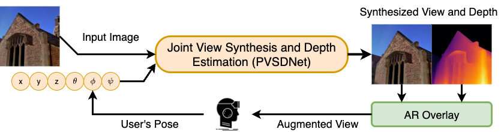
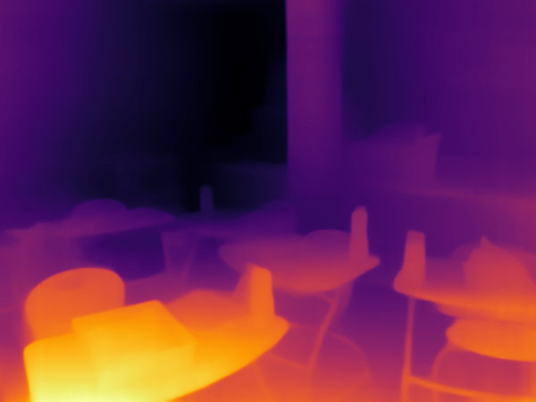
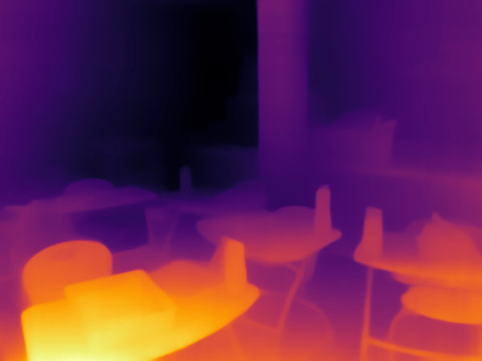
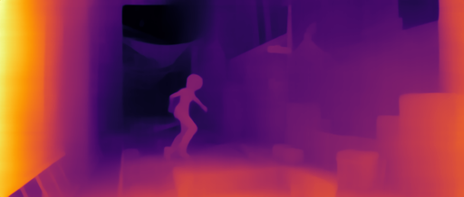
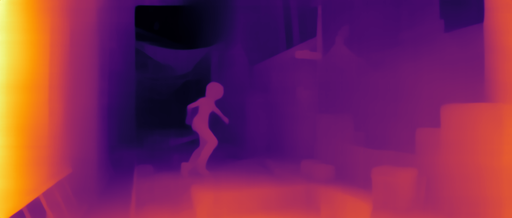

Real-time novel view synthesis (NVS) and depth estimation are pivotal for immersive applications,
particularly in augmented telepresence.
While state-of-the-art monocular depth estimation methods could be employed to predict depth maps for
novel views,
their independent processing of novel views often leads to temporal inconsistencies, such as flickering
artifacts in depth maps.
To address this, we present a unified multimodal framework that generates both novel view images and their
corresponding depth maps,
ensuring geometric and visual consistency.

 

 
